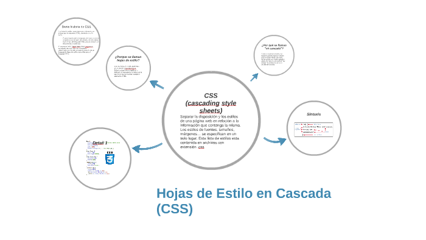
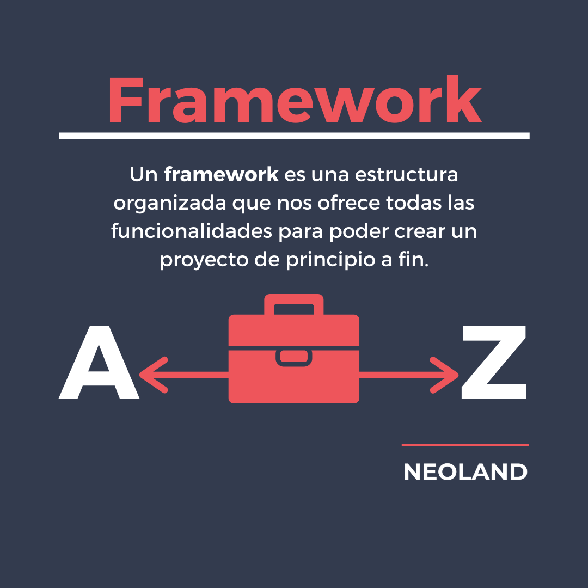
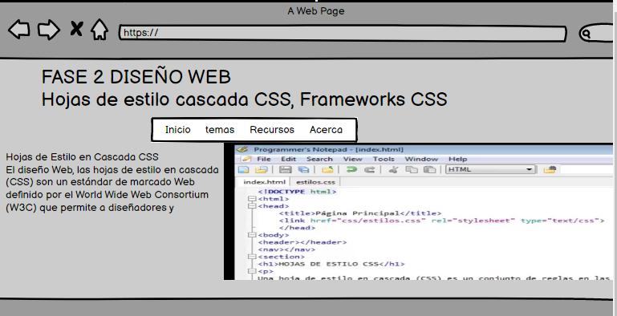

Hojas de Estilo en Cascada CSS
El diseño Web, las hojas de estilo en cascada (CSS) son un estándar de marcado Web definido por el World Wide Web Consortium (W3C) que permite a diseñadores y programadores Web definir estilos coherentes para páginas Web y aplicar la plantilla a varias páginas. CSS es una herramienta muy útil para racionalizar y acelerar el desarrollo web. Christopher Schmitt, Anaya Multimedia, 3/01/200 
Las hojas de estilo se llaman hojas de estilo "en cascada" porque: Las propiedades de estilo pueden estar escritas en varios sitios (en varios lugares de la página web o de la hoja de estilo) y dependiendo del sitio, afectan a más o menos elementos. Cuando un elemento está contenido en otro (por ejemplo, un párrafo) dentro de una división al elemento de dentro se le aplican también las propiedades definidas para el elemento de fuera (al párrafo se le aplicarían las propiedades definidas para la división). Dos reglas distintas pueden ser de aplicación a un mismo elemento (por ejemplo, a un párrafo con clase nombre, le es de aplicación tanto el selector .nombre como el selector p). Si las propiedades (escritas en diferentes sitios o para diferentes elementos) no entran en conflicto, el navegador aplica todas las propiedades. Por ejemplo, si el color de fondo de un elemento está definido en un sitio y el tamaño de letra en otro sitio, el navegador aplicará ambas propiedades al elemento. Pero si las propiedades entran en conflicto (por ejemplo, el color del fondo del elemento está definido en varios sitios con colores distintos), existen reglas para decidir qué propiedad tiene preferencia. Bartolomé Sintes Marco Páginas web HTML y hojas de estilo CSS 25 de octubre de 2021
Frameworks CSS
los frameworks ofrecen diversos componentes, como cuadrila de diseño, estilo de botón, formularios, formato de texto, diseño de imagenes algunos oferecen componentes de interza los cuales pueden interactuar con el usuario ejemplo las barras de navegación o los menus despegables.Christophe AUBRY, HTML5 y CSS3: para sitios con diseño web responsive 
Gracias a internet podemos encontrar diversos herramientas que nos pueden ser de utilidad sea cual sea nuestra profesión. Especialmente, si tu área es la tecnología y el desarrollo web, puedes encontrar cientos de framework y componentes que han sido diseñados para mejorar el proceso de desarrollo y hacen la vida de un programador mucho más sencilla. A continuación te presentamos una serie de framework para HTML/CSS,
Startup Framework: Contiene componentes y bloques complejos que pueden ser fácilmente integrados en cualquier diseño, permitiéndote crear cientos de soluciones para tus proyectos futuros.
Framework Responsive Email by Ted Goas: El desarrollador ha elaborado layouts que ayudará a crear plantillas profesionales de correo electrónico que soportan varias plataformas tales como Hotmail, Yahoo y Outlook.
Framework CSS Modal: Se ha desarrollado puramente con CSS así que tu proyecto será liviano y rápido. Está optimizado para móviles y múltiples navegadores. https://blog.aulaformativa.com/framework-gratuitos-para-html-css/
